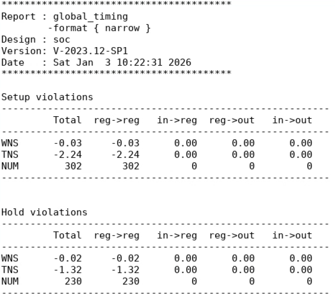
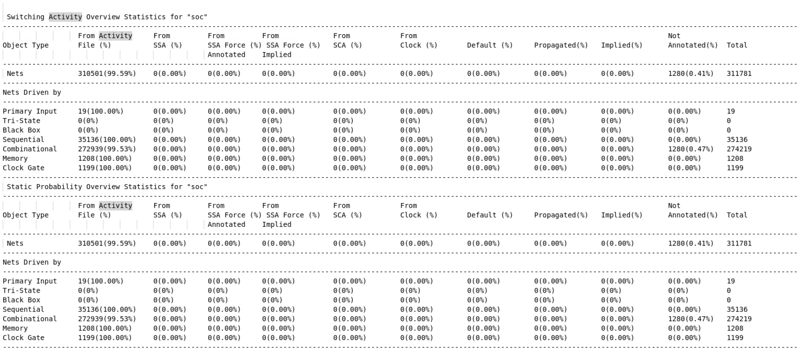
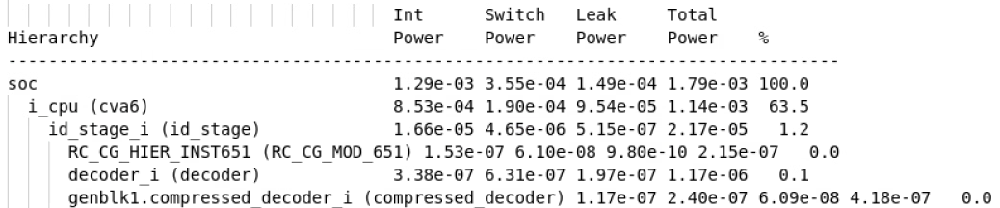
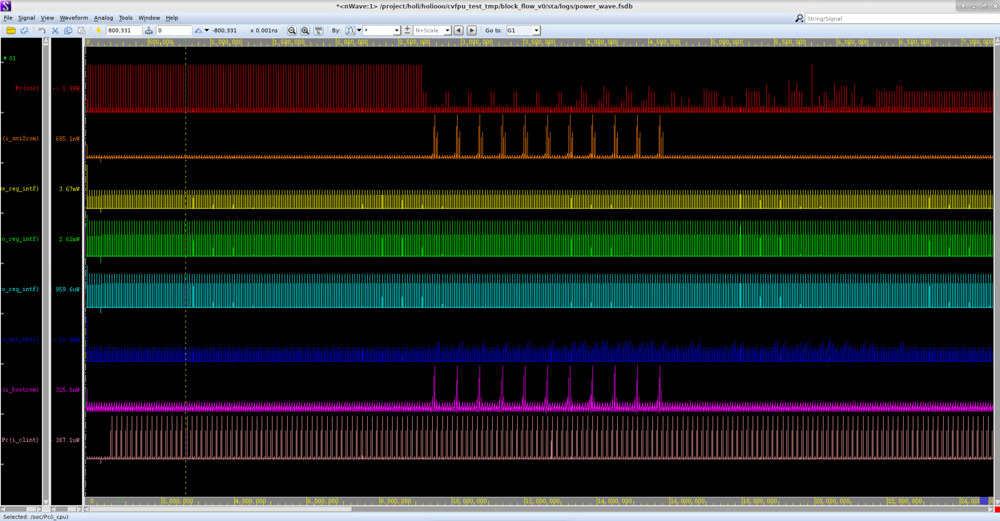

STA 与功耗分析指南 (PrimeTime & PTPX)
在完成物理实现（PNR）后，我们需要进行静态时序分析（Static Timing Analysis, STA）以确保设计在所有工艺角（Corner）下都满足时序要求。同时，我们也需要进行功耗分析，评估设计的功耗是否在可接受的范围内。
我们使用 Synopsys PrimeTime (PT) 工具进行 STA，并利用其 PrimeTime PX (PTPX) 插件进行功耗分析。该流程将两者集成在一起，一次运行即可同时产出时序和功耗报告。
TLDR
- 分析脚本:
sta/Makefile、sta/scripts/run_*.tcl - 运行命令:
make ptpx MODE=<mode> - 分析模式:
Averaged,VectorFree,Time_Based
1. 整体工作流程
分析流程由 sta/ 目录下的 Makefile 驱动。
该命令会执行以下两个主要步骤：
1.1 库文件准备
由于 SRAM Compiler 通常只生成 .lib 格式的库文件，而 Synopsys 工具链对 .db 格式库支持更好，因此脚本会首先自动执行 lib 任务。
该任务调用 lib_compiler 和 sta/scripts/lib_gen.tcl 脚本，将所有 SRAM 和 Macro 的 .lib 文件编译成对应的 .db 文件，并存放在原路径下。这是一个一次性的预处理步骤，如果 .db 文件已存在，脚本会自动跳过。
1.2 运行 PT/PTPX 分析
根据指定的 MODE，脚本会调用 pt_shell 并执行对应的分析脚本 (run_Averaged.tcl, run_VectorFree.tcl 或 run_Time_Based.tcl)。
- 输入文件: 脚本会自动从
pnr/目录加载 PNR 后的网表、SPEF 寄生参数文件和SDF 时序文件。 - 输出文件: 所有生成的日志和报告都存放在
sta/logs/和sta/reports/目录下。
2. 三种分析模式
你可以根据拥有的数据和分析目标选择不同的模式。
2.1 Averaged 模式
- 适用场景: 当你已经完成了 PNR 后仿真，并拥有了
waveform.fsdb波形文件时，希望得到整个仿真时间段内的平均功耗。 - 运行命令:
make ptpx MODE=Averaged - 核心逻辑: 读取后仿波形文件中的信号翻转活动（switching activity），并基于此计算平均的内部功耗、开关功耗和泄漏功耗。
- 输出: 脚本运行结束后自动退出，功耗结果在
sta/reports/report_power_avg.rpt中查看。
2.2 VectorFree 模式
- 适用场景: 当你完成了后端实现，但暂时没有后仿波形时，希望快速得到一个粗略的功耗估计。
- 运行命令:
make ptpx MODE=VectorFree - 核心逻辑: 不依赖外部波形文件。它使用设计中定义的时钟频率和默认的翻转率（toggle rate）在设计中进行传播，从而估算功耗。结果通常没有基于波形的模式准确，但可作为早期参考。
- 输出: 脚本运行结束后自动退出，功耗结果在
sta/reports/report_power_avg.rpt中查看。
2.3 Time_Based 模式
- 适用场景: 当你拥有后仿波形，并且希望分析功耗随时间变化的具体情况，找出功耗峰值。
- 运行命令:
make ptpx MODE=Time_Based - 核心逻辑: 同样读取
waveform.fsdb文件，但它会计算每个时间点的瞬时功耗，并生成一个功耗波形。 - 输出: 脚本运行结束后，会自动打开 nWave (Verdi) 窗口，并加载生成的功耗波形文件
logs/power_wave.fsdb。
3. 关键检查点与结果分析
无论使用哪种模式，成功运行后都需要检查以下几个关键点：
3.1 检查输入文件加载
首先检查 sta/logs/ptpx.log 文件，确保网表、SPEF 和 SDF 文件都被成功加载。任何关于文件找不到或格式错误的 "Error" 或 "Warning" 都需要被解决。
3.2 检查时序违例 (STA 结果)
PrimeTime 会首先进行静态时序分析。你需要检查 sta/reports/report_global_timing.rpt 文件中是否存在时序违例，以及 sta/reports/report_timing.rpt 文件中的最差时序路径。

报告的关键指标： - WNS (Worst Negative Slack): 最差路径的时序余量。如果为负数，代表存在建立时间（Setup）或保持时间（Hold）违例。 - TNS (Total Negative Slack): 所有违例路径的时序余量总和。 - NUM: 违例路径的总数量。
3.3 检查翻转活动标注率 (针对 Averaged/Time_Based 模式)
如果使用了基于波形的分析模式，必须确认波形中的信号翻转信息被成功地标注到了设计的网络（net）上。检查 sta/reports/report_activity_coverage.rpt 文件。

关注 Nets 这一行。From Activity File (%) 列的数值代表了从 FSDB 波形文件中成功标注的信号网的百分比，这个值应该非常高（如 99.59%）。Not Annotated (%) 列应该非常低。如果标注率过低，功耗分析结果将不准确。
3.4 分析功耗结果
-
Averaged/VectorFree 模式: 打开
sta/reports/report_power_avg.rpt或report_power_verbose.rpt查看功耗 breakdown，包括内部功耗 (Internal Power，寄生参数充放电的功耗如 CMOS 短路电流)、开关功耗 (Switching Power，晶体管负载充放电的功耗) 和泄漏功耗 (Leakage Power，非理想漏电流的功耗) 的分布。
Averaged Power Report Example 上图展示了平均功耗的 hierarchical 分布。
-
Time_Based 模式: 在自动打开的 nWave 窗口中默认没有信号。你需要通过菜单栏 Signal -> Get Signals 或 Get All Signals 来加载功耗信号。你可以按层级查看不同模块的功耗波形，从而定位功耗热点。

Time-Based Power Waveform in nWave 上图展示了不同模块（
soc、i_axi2rom等）的功耗波形。可以看到，当时钟翻转且 CPU 正在执行任务（如 AXI 总线读写）时，总功耗会出现明显的峰值。